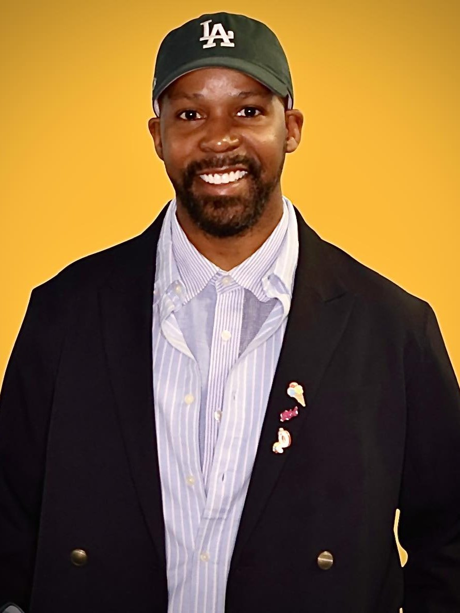

About
I've mastered the execution.
Now I lead the vision.
I didn't set out to be a stylist. I trained as an actor — which is exactly why my work has always been about story before surface.

I earned a BFA in acting before I ever pulled a rack of clothes. When I fell into fashion, I fell hard — and I brought the actor's toolkit with me. I still work a shoot the way I'd work a role, asking three questions: what story am I telling, who is the person wearing the clothes, and how do the clothes change them? An editorial isn't an outfit. It's a mini-play.
That instinct got noticed early. Nikki Fowler, editor-in-chief of Glitter Magazine, was the first to believe in me as an editorial stylist — she let me style the spreads, art direct, and produce the shoots. I joined the developmental creative team at Ladygunn, sharpened my styling and my art direction, and became fashion editor at Sheen Magazine and host of The Journey on Sheen Talk Live.
Then came the work most people know me for: celebrity and red-carpet styling for Macy Gray, Skai Jackson, Norman Reedus, Keesha Sharp, EJ Johnson, and Garcelle Beauvais; editorial and commercial campaigns; and commentary in TIME and Glamour on how clothes shape the way we're read.
These days I work upstream. I lead visual merchandising and styling in enterprise fashion at Walmart — the largest retailer in the world. I develop the central concept, set the point of view, turn business goals into a visual language, and direct the teams that execute it at national scale. I didn't leave styling behind. I built on top of it. The years of sourcing, fitting, and producing are exactly what make my direction credible: I know what it takes to turn an idea into clothes, sets, people, stores, and campaigns.
The through-line hasn't changed since the acting classroom. Style is how people and brands tell the world who they are — and who they intend to become. My job is to help them tell it well.
The arc
Executor to leader.
Trained as an actor
BFA in acting — the origin of a story-first method.
Glitter Magazine
First championed as an editorial stylist, art director, and producer by EIC Nikki Fowler.
Ladygunn creative team
Honed styling and art direction on the developmental creative team.
Sheen Magazine & Sheen Talk Live
Fashion editor, and host of The Journey — building the on-camera voice.
Celebrity styling · TIME · Glamour
Red-carpet and editorial work, plus national commentary on style and perception.
Enterprise fashion leadership
I lead visual merchandising and styling at Walmart — creative direction at national retail scale.
Work with me.
Creative direction, visual strategy, speaking, hosting, or personal styling.
Get in touch →